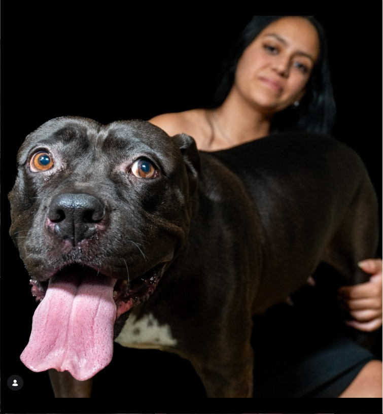
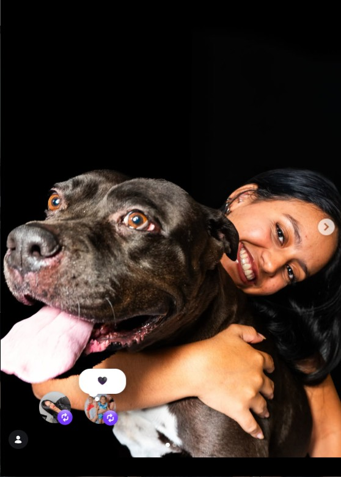
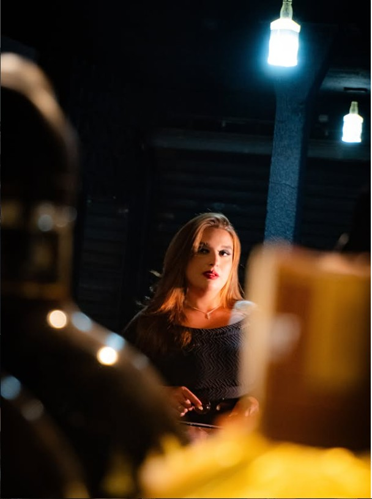
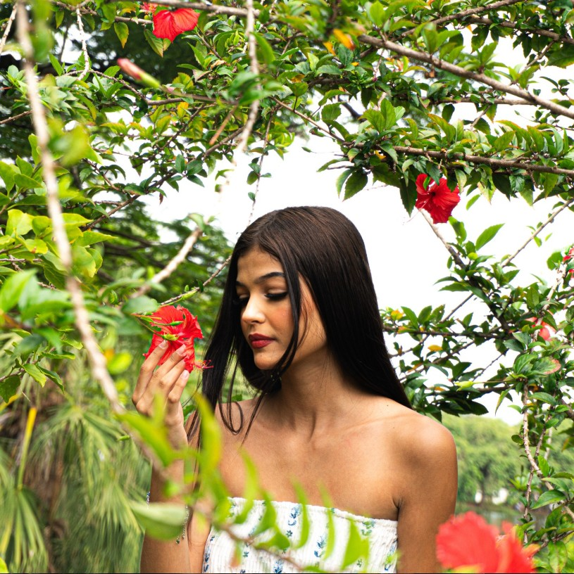
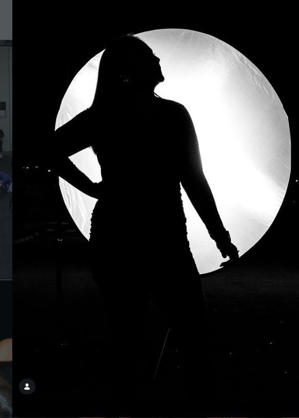
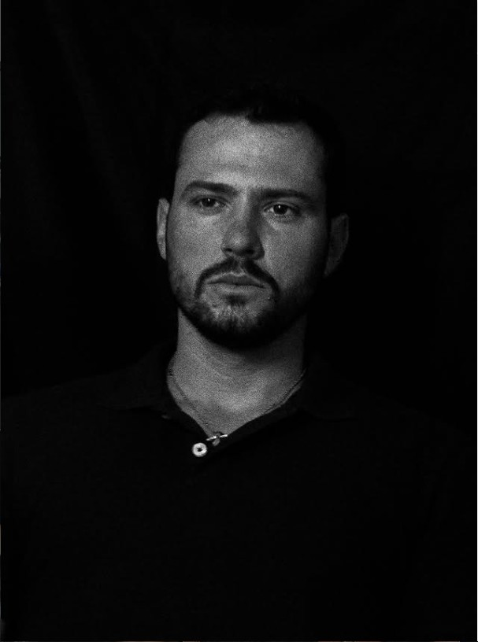
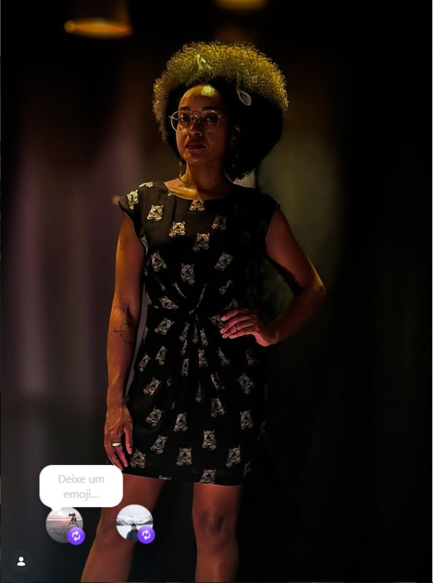

FOTOGRAFIA • ESPORTE • EVENTOS • RETRATOS
Momentos reais.
Imagens que ficam.
Fotografia com energia, movimento e personalidade para registrar aquilo que vale a pena lembrar.
PORTFÓLIO
Alguns trabalhos
Retratos, ensaios e momentos registrados pela DGX Fotos.






SERVIÇOS
Fotografia para diferentes histórias
Esportes
Corridas, lutas, treinos, campeonatos e eventos esportivos com foco em ação e emoção.
Eventos
Registro natural de momentos, pessoas e detalhes para eventos sociais, profissionais e culturais.
Retratos
Ensaios pessoais e profissionais com direção simples, estética limpa e resultado autêntico.
SOBRE A DGX FOTOS
Fotografia com presença.
A DGX Fotos nasceu para transformar momentos rápidos em registros que permanecem. O foco é criar imagens fortes, naturais e com personalidade.
Atendimento em Araras e região, com possibilidade de deslocamento para outros locais mediante consulta.
@dgxfotos →VAMOS FOTOGRAFAR?